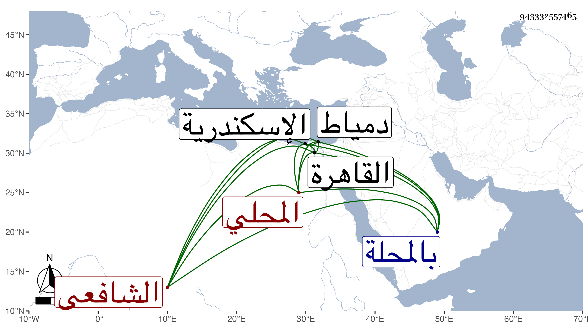

0902Sakhawi.DawLamic.ITO20230111-ara1.EIS1600.943332557465
Biography ID: 943332557465
677
عبد القادر بن إبراهيم بن سليمان محيي الدين أبو الفتوح المحلي الشافعي ويعرف بابن السفيه . ولد سنة خمس وثلاثين وثمانمائة بالمحلة ، ونشأ فحفظ القرآن والبهجة وجمع الجوامع وألفية النحو وغير ذلك وقال لي مرة أنه حفظ المنهاج الفرعي فالله أعلم ، ولازم الشمس بن كتيلة في العربية والفقه وأصوله ، وقدم القاهرة فأخذ عن العلم البلقيني في الفقه بل قرأ عليه في الشفا وعن قريبه البدر أبي السعدات البلقيني والزين زكريا والجوجري ، وتميز في العربية ونظم الشذور ودرة الغواص للحريري وشرحهما وكذا شرح بانت سعاد وقرضه له أبو السعادات وزكريا والولوي الاسيوطي وكاتبه وشارك في الأصول وغيره وتردد للبقاعي يسيرا ولازمني في قراءة السيرة وغيرها وحضر كثيرا من الدروس وكتبت له سوى التقريض المشار إليه اجازة حسنة ، وخطب في بلده بالجامع الطريني وقرأ البخاري على العامة ، وناب في القضاء عن الصلاح بن كميل فمن بعده وكذا استنابه الصلاح المكيني . وحج مرارا ودخل اسكندرية ودمياط ، كل ذلك مع خفة روح ولطافة عشرة وانطراح ومزيد فاقة وكثرة عيال وفضائل ووسائل نظم حسن كتبت عنه منه قوله وقد مرض بشقيقة طال انقطاعه بها :
| يا راحم الضعفاء يا من فضله | عم الخلائق بالمواهب والكرم |
| إني سألتك بالنبي محمد | ومن استجار به لديك قد اعتصم |
| فبحقه وبجاهه وبقربه | أدعوك تكشف ما اعتراني من ألم |
| واجعل صلاتك مع سلامك دائما | لجناب حضرته الشريفة في النعم |
بل امتدحني بقوله :
| كرم النفس فيه معنى لطيف | هو ميدان مدحة الشعراء |
| إن تكن مادحا فدونك هذا | أو تكن هاجيا فغير السخاء |
وكذا أنشأ بعض الخطب وأخبرني أنه رأى النبي صلى الله عليه وسلم كثيرا .
